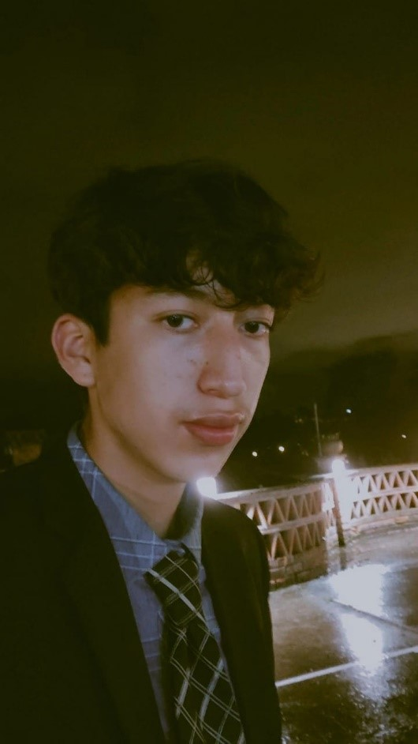

Danny Francisco Jaramillo Guachon
Direccion : Guadalupe Larriva
Email : dannyjaramillofran@gmail.com
Telefono: 0986920090
Datos personales
Nacionalidad:
Ecuatoriana
Fecha de Nacimiento:
20/10/2003
Lugar de nacimiento:
Loja
Estado civil:
Soltero
Cedula:
1105615536
Bibliografia
Vida personal :
Nacido en la ciudad de Loja un 20 de octubre del 2003 a los dos meses de nacido me bautizaron en la parroquia eclesiástica Perpetuo Socorro de la ciudad de Loja, pasaron unos años y fui creciendo hasta que a los cuatro años de edad me pusieron en el kínder de las hermanas del Divino Niño luego de eso a los cinco años de edad estudie en la prestigiosa escuela ‘’Alonso de Mercadillo” siendo un estudiante destacado, siendo presidente de curso 3 años seguidos y también participando en el consejo estudiantil de dicha escuela, además logros en ajedrez, futbol y básquet , graduándome y pasando a la siguiente etapa de vida estudiantil que la comenzaría con un mensaje del ministerio de educación que decía su representado Danny Francisco Jaramillo Guachón ha sido asignado a la unidad educativa del milenio “Bernardo Valdivieso” con una gran emoción acepte el cupo ya que era el colegio de mis sueños , lo siguiente considero que fue una de las etapas mas bonitas de mi vida conocí nuevas personas, hice nuevas amistades entre ellas dos individuos que me ayudaron siempre y estuvieron para mi en las buenas y en las malas , cabe recalcar que de la misma manera siempre me ha gustado el deporte destacándome en 3 campeonatos de futbol 2 de básquet y uno de ecuaboly en todos ellos quedando campeón, uno de mis pasatiempos favoritos a la hora del recreo era conocer nuevas personas y así la vida bonita hasta que el mundo se paralizo por una pandemia del covid-19 nos tocó estudiar de manera virtual y graduarnos de esa manera, no fue lo que hubiésemos querido pero la vida nos preparó ese destino graduándome con una calificación de 9,31 despidiendo me mi colegio amado, luego de eso rendiendo la prueba del transformar y asignándome un cupo en la universidad Estatal de “Bolívar” donde estudie un semestre,actualmente estudio en la Universidad Internacional Del Ecuador y estoy muy feliz de formar parte de esta U, mido 1.80m y peso 60 kg .
Proyecciones
Propositos:
Una de mis proyecciones a más de graduarme en la UIDE, es seguir una segunda carrera para poder seguir creciendo como persona y en el ámbito profesional.